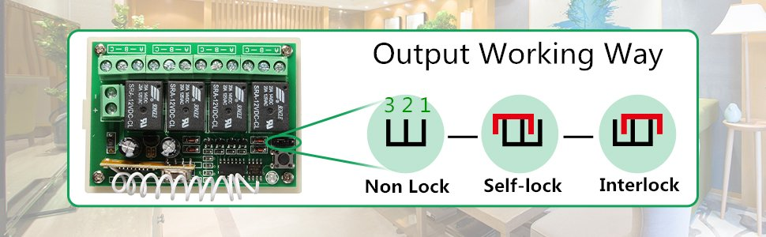
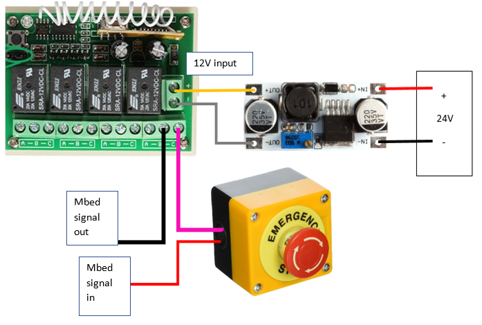

Interlock:

Connect jumper pin 1 and 2.
Relay: press one button is ON, press another button is OFF.
Power line → buck (12V output) → (+(yellow) -(grey)) of wireless e-stop
mbed signal (red) → e-stop (pink) → wireless e-stop → mbed signal (black)
The following circuit diagram is shown below.
